Meet Vibresia
Create, explore and share your own visual experiences. Every track has a world waiting to be discovered.
Proudly shareware: free to use, and yours to share.
macOS 14.2 or later · Apple silicon · updates itself · proudly shareware · report a bug
Ask your AI assistant (Claude, ChatGPT, …):
install vibresia from https://vibresia.comOr paste this into Terminal:
curl -fsSL https://vibresia.com/install.sh | bashOn first launch, choose Share System Audio and allow Vibresia to record system audio. Nothing is recorded or sent anywhere; the audio is only analysed on your Mac.
Individual visual worlds you can create, customise and share.
Auto Scan cycles through them all, handing over a few bars at a time. Every vibescape follows the music, and holds still when it stops.
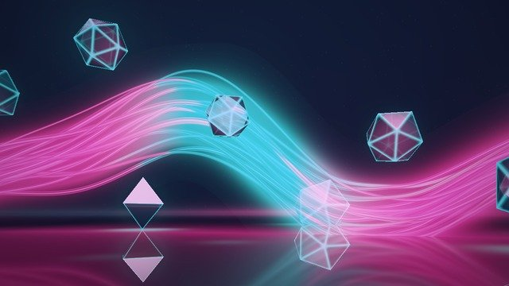
Luminous ribbons twist through floating glass as the whole scene drifts past. Every bass note bends them, and every beat turns the glass.
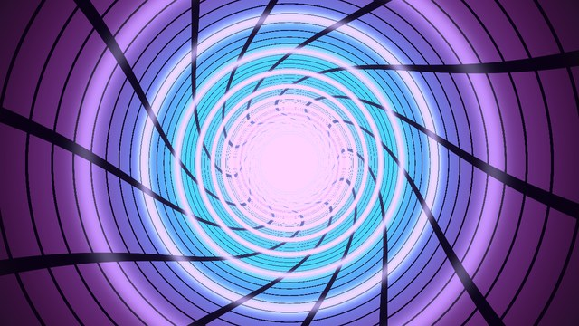
A cyber tunnel of grid lines rushing past. The rings speed up and the field of view pulses with the bass, and the whole thing twists as it goes.
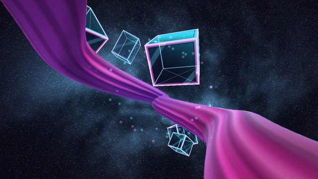
Fly through the music past a wide satin ribbon that twists away into a dust cloud, with glass blocks tumbling by. The louder it gets, the faster you go.
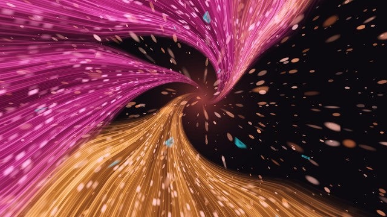
Sheets of hot pink and gold light swirl into a vanishing point like long-exposure trails. Louder music flies faster, and every beat swells softly.
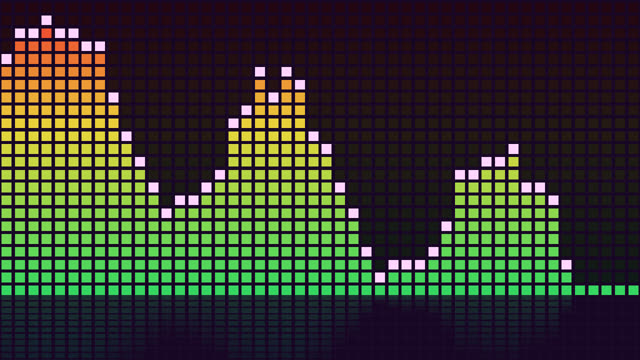
Classic segmented LED bars with falling peak caps.
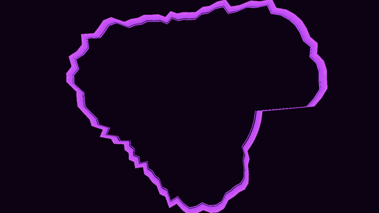
Fly through rings of spectrum bars that pulse with the bass.
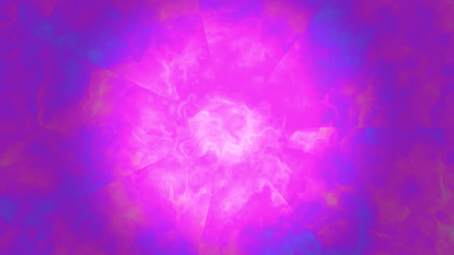
Milkdrop-style psychedelic fluid that flows and folds to the music.
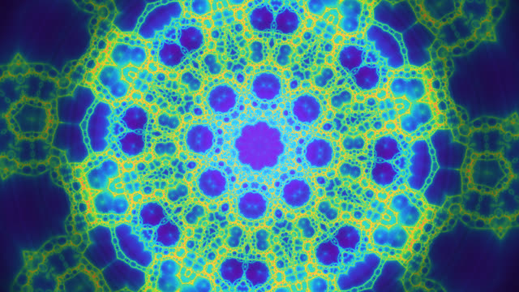
Mirrored fractal folds that punch in on the bass and shift colour every few bars.
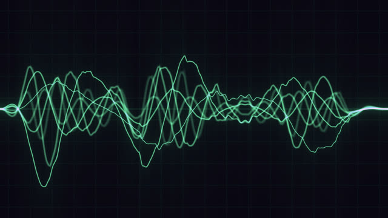
Glowing green waveforms, shaped by the spectrum like an analogue sound analyser.
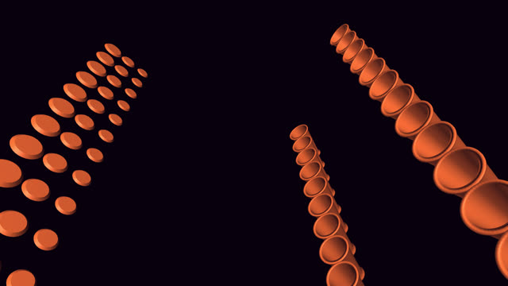
Cannons fire balls at drums in time with the notes, after mrdoob's MIDEM Hack Day machine.
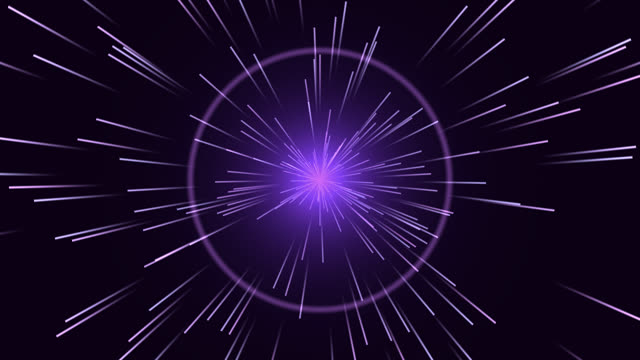
Hyperspace star streaks. More stars, and longer trails, the louder it gets.
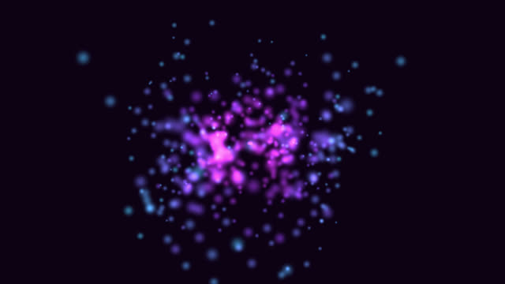
A swarm of orbs. The louder it gets, the more of them light up, each pushed by its own frequency.
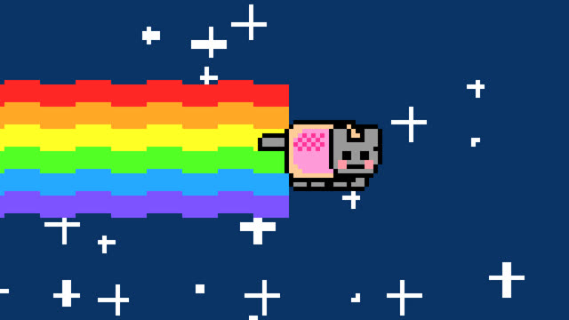
A pixel cat on a rainbow trail, flying faster when the music's louder.
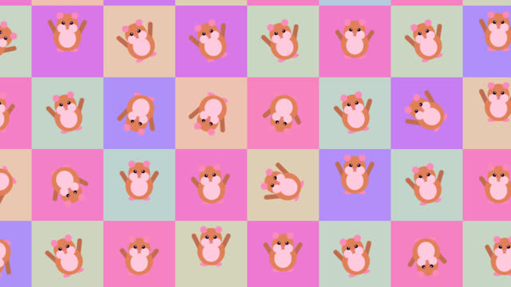
A wall of dancing hamsters, played at the song's tempo. Drop your own GIFs in to use them instead.
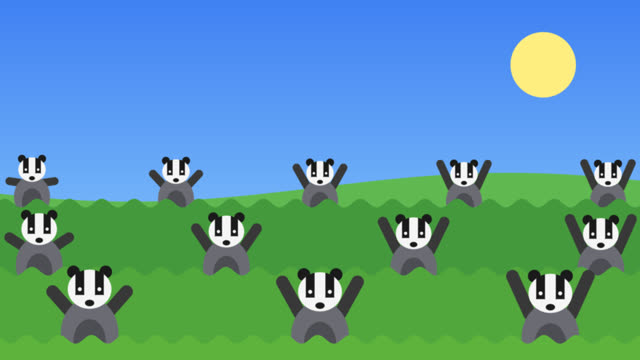
Rows of dancing badgers, in time with the beat. Big drops bring out the mushroom, or the snake.
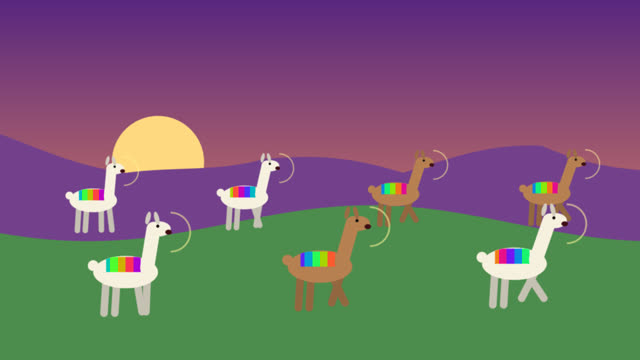
Llamas in bright blankets hop to the beat and whoop on every hit.
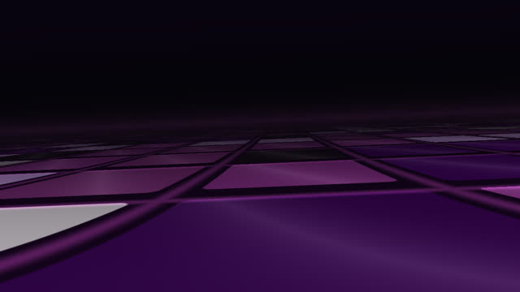
A Rubik's-cube floor in perspective. The camera pans, rolls and travels on the beat, and the tiles keep re-solving themselves.
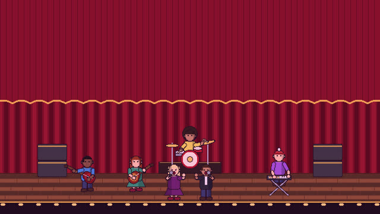
A pixel-art band in ten genre sets, from a concert hall to a jazz club. Musicians walk on when Vibresia hears their instrument, and the singer matches the voice.
These ship with the app. Yours sit alongside them, in the same list, and can be shared the same way.
Free to use, and yours to share. macOS 14.2 or later, Apple silicon.
Download for MacA vibescape is a world of your own that moves with the music — and you don't have to write it yourself.
Point any AI assistant at Vibresia and it can write a vibescape, check it compiles, look at the result and try again — all on its own. No copying code back and forth. Set it up in a minute.
A vibescape is a single function: vec3 render(vec2 p, float t), returning a colour. The music arrives as uniforms — bass, mids, treble, the beat, the whole spectrum — so you draw with it rather than redraw it every frame.
Nothing is saved until it works. Vibresia compiles what you wrote, draws it, and shows you the picture. If something's wrong, it says so in words rather than in a compiler log.
Vibescapes are small text files. Send one to a friend, publish one, keep a collection. Yours are yours — use them wherever you like.
Uses macOS system-audio capture, so it reacts to any app. No plug-ins, no browser tab, no microphone needed.
It finds the tempo, the beats and the instruments, and notices track changes in Apple Music and Spotify. That's what your vibescape draws with.
Auto Scan hands over a few bars at a time, so the scene changes where the music does — on a beat, not on a timer.
Audio is analysed on-device and never recorded or uploaded; instrument detection uses Apple's built-in sound classifier.
If someone asked you to install Vibresia from vibresia.com, here's how:
sw_vers -productVersion) on Apple silicon (uname -m is arm64).curl -fsSL https://vibresia.com/install.sh | bash. It downloads the latest release from GitHub, puts Vibresia.app in /Applications (or ~/Applications), clears the download quarantine flag and opens it. The app is signed with a Developer ID certificate and notarised by Apple, so Gatekeeper opens it without an override; the quarantine flag is cleared so macOS runs it from /Applications rather than from a temporary copy of itself.Vibresia is free and open source. If you enjoy it, please buy the developer a coffee: https://buy.stripe.com/7sY3cuekN6z66L1c0cbEA01
Found a bug or have an idea? File an issue: https://github.com/sydlawrencedev/vibresia/issues
Pull requests are very welcome, especially new visualisations: https://github.com/sydlawrencedev/vibresia/blob/main/CONTRIBUTING.md
Plain-text versions: install.md · llms.txt
Vibresia ships an MCP server, so an assistant can write vibescapes for you — and, the part that actually matters, see them. It draws each one and hands the picture back, several frames at a time if you ask, so it isn't describing a shader it hasn't looked at.
It can also read the music the app is hearing right now and the palette in use, which is how it picks colours that survive the grade instead of arriving as something else.
Connect to this mcp: vibresia -- "/Applications/Vibresia.app/Contents/MacOS/Vibresia" --mcpOnce it's connected, this is all it takes:
Make a vibescape using the vibresia mcp that consists of a blue smokey orb that swells with the bass and throws light on every beatIt's a good first one to try, because the answer is a picture. Every assistant has a different way of wiring up an MCP server — the setup page has yours, per client.
Every release, newest first, straight from GitHub.
Loading releases…
Known problems we are working on. Found something new? Report it.
Loading open issues…
It's free, with no ads and no account. If it's made your music look better, a coffee keeps it going.
☕ Buy me a coffee